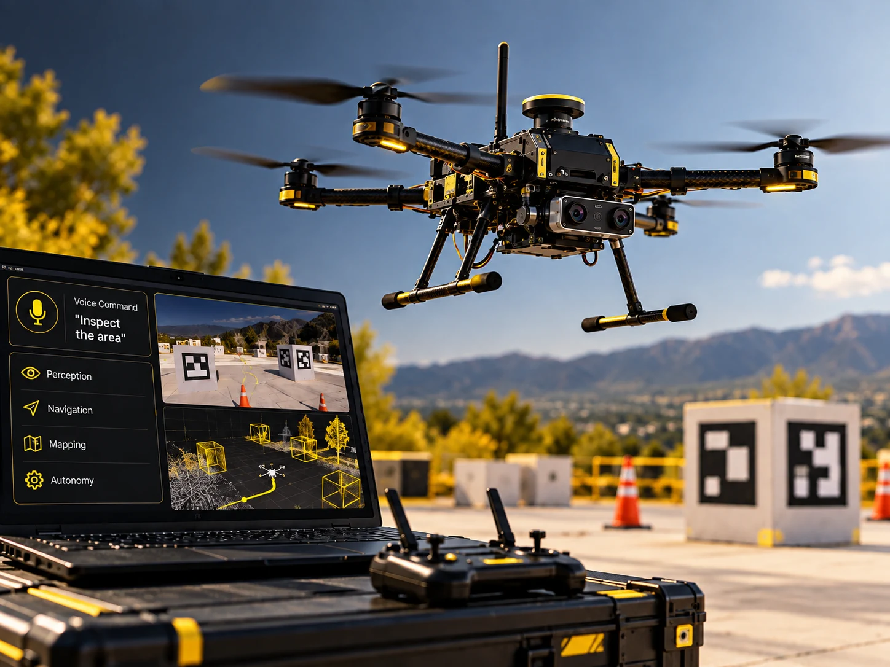
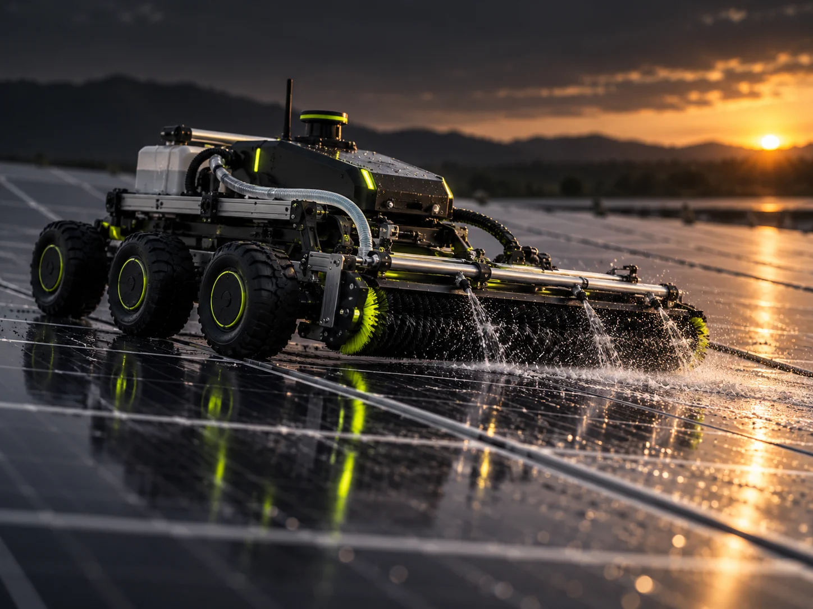

J’intègre, teste et fiabilise des systèmes E/E complexes, de l’analyse des exigences à la résolution d’anomalies, en lien avec les équipes système, logiciel, validation et fournisseurs.
IVV/IVVQ✦INTÉGRATION SYSTÈMES E/E✦VALIDATION SYSTÈME✦CAN/LIN✦CANALYZER✦ECU/HVAC✦AUTOMATISATION DE TESTS✦SYSTÈMES EMBARQUÉS✦DIAGNOSTIC✦ROBOTIQUE & IA✦
01
À PROPOS
Comprendre, intégrer, tester, fiabiliser.
Ingénieur mécatronique spécialisé en IVV/IVVQ, je m’intéresse aux systèmes complexes situés à la rencontre de l’électronique, du logiciel et du monde physique.
J’aime comprendre comment leurs différentes composantes interagissent, identifier l’origine d’un dysfonctionnement et contribuer à construire des solutions fiables et vérifiables.
Curieux, méthodique et pragmatique, j’apprécie les environnements multidisciplinaires dans lesquels il faut apprendre rapidement, collaborer avec différents métiers et transformer un problème technique en actions concrètes. Je poursuis en parallèle mon intérêt pour l’IA appliquée à la robotique et aux systèmes autonomes.
Illustration non confidentielle · cartographie des interfaces multi-architecture
Mission : sécuriser l’intégration de composants HVAC et de leurs ECU dans plusieurs contextes véhicule, tout en coordonnant interfaces, exigences et plans d’action.
Analyse des exigences, interfaces et écarts d’intégration.
Coordination entre équipes système, logiciel, validation et fournisseurs.
Suivi des anomalies jusqu’à la définition et la vérification des actions correctives.
Illustration non confidentielle · corrélation des trames jusqu’à la cause vérifiée
Mission : transformer des symptômes véhicule en causes techniques vérifiables, puis accompagner leur résolution avec des éléments de preuve exploitables.
Investigation avec CANalyzer sur signaux, CRC, compteurs et états de diagnostic.
Croisement des données réseau, puissance et température pour isoler les causes.
Harmonisation d’une messagerie LIN pour améliorer robustesse et traçabilité.
CANalyzerCAN/LINCRCAnalyse de causes
03
DÉPLOIEMENT & VALIDATION TERRAIN
PLC déployé sur 6 sites photovoltaïques
6sites photovoltaïques30 sinterruption après amélioration130+variables par jeu de données
Illustration non confidentielle · impact mesuré après déploiement PLC
Mission : concevoir, programmer et déployer une logique PLC robuste, puis vérifier son comportement en conditions réelles avec les contraintes de sécurité d’un système robotisé.
Développement du programme d’automatisation et préparation du déploiement multi-site.
Intégration des fonctions de sécurité du robot et validation terrain.
Réduction des interruptions de 5–10 minutes à 30 secondes.
Réalisation de simulations mécaniques et dimensionnement de poteaux pour réseaux électriques et fibre optique.
Conception de plans techniques sous AutoCAD selon les contraintes mécaniques et électriques.
Vérification de la conformité des conceptions avant finalisation des dossiers techniques.
04Beyrouth, Liban
CORAL OIL / MERCEDES-BENZ
Stages techniques en maintenance électromécanique & diagnostic automobile · Mai 2023 - Juil. 2023
Maintenance électromécanique en environnement Oil & Gas, dans le respect des procédures de sécurité.
Diagnostic, calibrations de précision et recherche de pannes sur systèmes mécaniques et unités de contrôle électronique.
Participation à la réparation et à l’intégration de systèmes électroniques automobiles avancés.
04
R&D ROBOTIQUE & IA
Projets de conception et systèmes autonomes
R&D ROBOTIQUE & IA
01

Projet phare
Drone IA autonome à commande vocale
Drone autonome combinant interprétation vocale par LLM, vision par ordinateur et perception en Python pour transformer une intention exprimée en langage naturel en objectifs de navigation et en actions physiques.
Interprétation sémantique des demandes vocales par un grand modèle de langage, au-delà de commandes rigides.
Analyse visuelle de l’environnement et détection d’objets pour sélectionner une destination pertinente. Exemple : interpréter un besoin d’eau ou la recherche d’un type de lieu et en déduire un objectif de navigation.
Exploration du lien entre raisonnement IA, perception du monde réel, prise de décision en temps réel et comportement robotique autonome.
PythonPyTorchLLMVision par ordinateurNavigation autonomeRobotique
02

Projet phare
Robot Autonome à 6 Roues de Nettoyage de Panneaux Solaires
Plateforme robotique autonome à six roues associant navigation, commande embarquée, capteurs, conception mécanique et système de nettoyage dédié aux installations photovoltaïques.
Conception et développement complet d’un robot autonome à 6 roues pour le nettoyage par eau et brosses rotatives.
Conception mécanique SolidWorks, analyses d’efforts, simulations avant fabrication et usinage CNC.
Architecture à deux microcontrôleurs, PCB personnalisés, câblage, soudure et intégration système.
Application mobile : position, avancement et batterie en temps réel.
Siemens TIA PortalSiemens S7PLCLadderFBDSCLCapteurs / ActionneursSolidWorksAutoCAD
06
DOMAINES D’EXPERTISE
De l’exigence à la preuve de conformité.
01
IVV/IVVQ
Préparation, exécution et traçabilité des activités d’intégration, vérification, validation et qualification.
02
Intégration Systèmes E/E
Sécurisation des interfaces entre ECU, logiciel, architecture véhicule et composants physiques.
03
Réseaux & Diagnostic
Analyse CAN/LIN, signaux, trames et états pour identifier et vérifier les causes d’anomalies.
04
Tests & Automatisation
Python, MATLAB/Simulink et automatisation pour rendre l’analyse plus rapide, reproductible et exploitable.
05
Validation Terrain
Déploiement, mesure de performance et vérification du comportement en environnement réel.
06
Robotique & IA Appliquée
Exploration de systèmes autonomes reliant perception, décision, commande et interaction avec le monde physique.
07
FORMATION
Parcours académique
01
Master Mécatronique & Intelligence Artificielle
Université Paris-Saclay
02
Master Microélectronique et Systèmes Embarqués
Université Grenoble Alpes
03
Cycle d’Ingénierie en Mécatronique
Université Rafik Hariri
08
COMMUNICATION INTERNATIONALE
Langues
FR
Français
Courant
EN
Anglais
Courant
AR
Arabe
Courant
ES
Espagnol
Débutant
DE
Allemand
Débutant
MT
Maltais
Débutant
09
RECONNAISSANCE
Distinctions & Réalisations
Diplômé avec mention
Bourses académiques complètes
Honors List / distinction en mathématiques
1ère place - compétition de robotique thermo-fluidique
10
INITIATIVE & COORDINATION
Leadership & Entrepreneuriat
Fondateur & Coordinateur - Organisation de Tutorat
Création et gestion d’une activité de tutorat, recrutement et coordination d’environ 10 tuteurs, planification des capacités, suivi de la qualité du service et gestion des priorités.
11
CONTACT
ÉCHANGEONS
Vous recrutez pour une mission en IVV/IVVQ, intégration de systèmes E/E, test ou validation de systèmes embarqués ? Je suis disponible immédiatement pour un CDI en France.